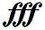

Dynamics are indicators of the relative intensity or volume of a musical line.
| Pianississimo Extremely soft. Very infrequently does one see softer dynamics than this, which are specified with additional ps. |
|
| Pianissimo Very soft. Usually the softest indication in a piece of music, though softer dynamics are often specified with additional ps. |
|
| Piano Soft. Usually the most often used indication. |
|
| Mezzo
piano Literally, half as soft as piano. |
|
| Mezzo forte Similarly, half as loud as forte. More commonly used than mezzo-piano. If no dynamic appears, mezzo-forte is assumed to be the prevailing dynamic level. |
|
| Forte Loud. Used as often as piano to indicate contrast. |
|
| Fortissimo Very loud. Usually the loudest indication in a piece, though louder dynamics are often specified with additional fs (such as fortississimo - seen below). |
|
|  | Fortississimo Extremely loud. Very infrequently does one see louder dynamics than this, which are specified with additional fs. |
| Sforzando Literally "forced", denotes an abrupt, fierce accent on a single sound or chord. When written out in full, it applies to the sequence of sounds or chords under or over which it is placed. |
|
| Crescendo A gradual increase in volume. Can be extended under many notes to indicate that the volume steadily increases during the passage. |
|
| Diminuendo Also decrescendo A gradual decrease in volume. Can be extended in the same manner as crescendo. |
Other commonly used dynamics build upon these values. For example "piano-pianissimo" (represented as 'ppp' meaning so softly as to be almost inaudible, and forte-fortissimo, ('fff') meaning extremely loud. In some European countries, use of this dynamic has been virtually outlawed as endangering the hearing of the performers.[2]
| Forte-piano A section of music in which the music should initially be played loudly (forte), then immediately softly (piano). |
Another value that rarely appears is niente, which means 'nothing'. This may be used at the end of a diminuendo to indicate 'fade out to nothing'.